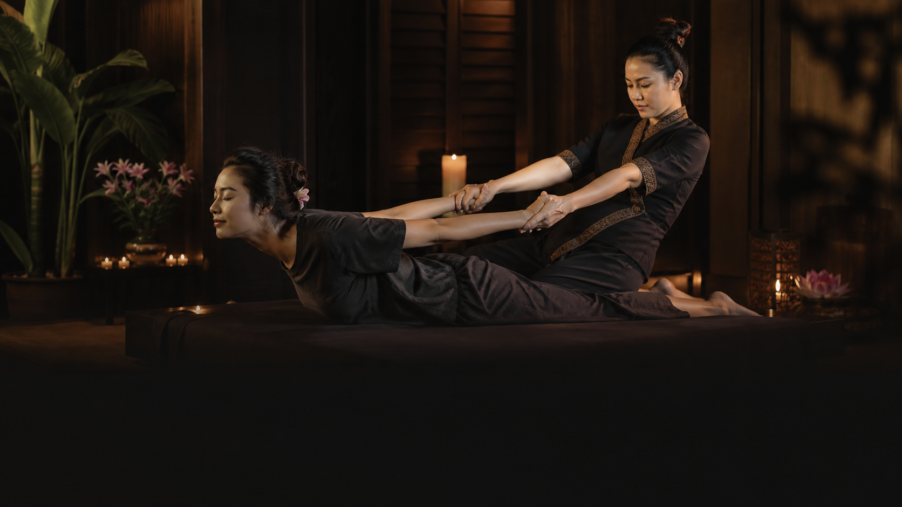
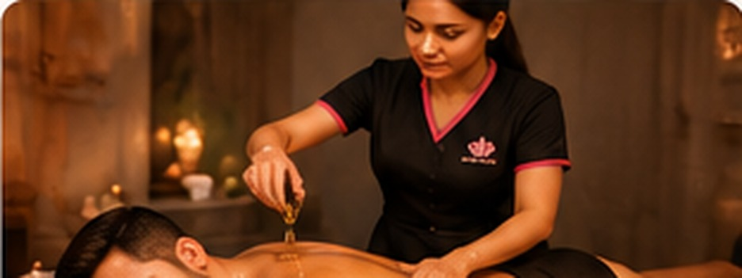
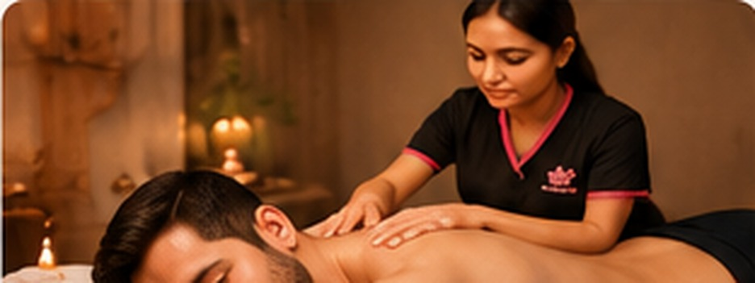
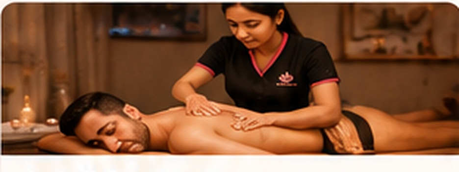
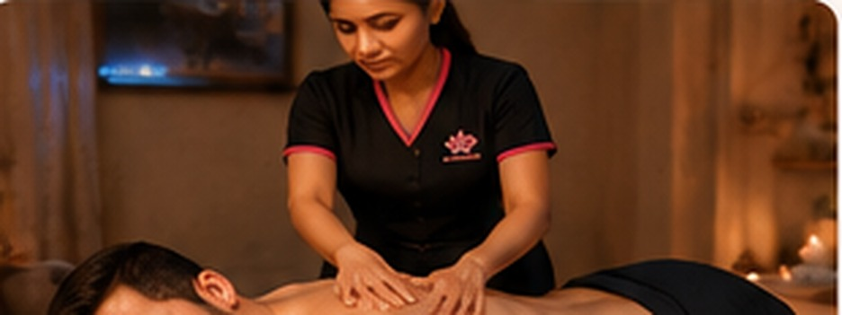
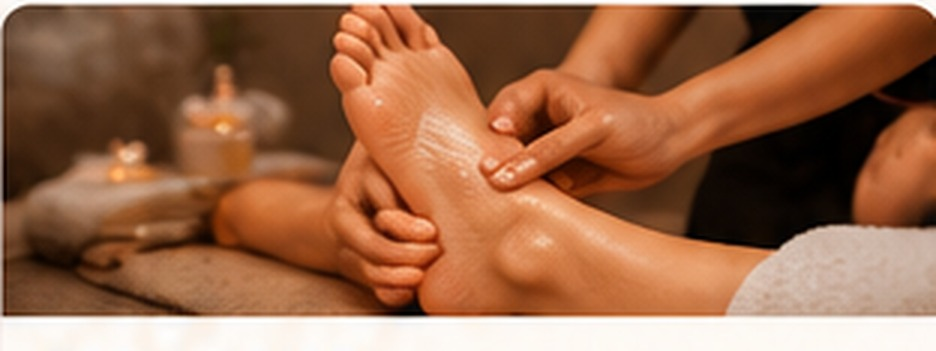
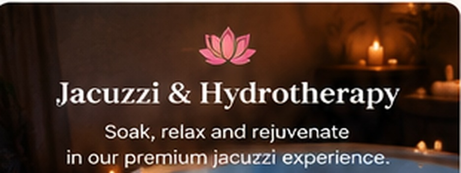

01 / MOVEMENT
Thai Massage
Stretch-led bodywork designed to encourage flexibility, ease stiffness and restore energy.
Book this ritual
Kyra Wellness & Spa · Madhurawada, Visakhapatnam
Premium massage and wellness experiences created to slow the day down, soften tired muscles and leave you feeling renewed.
A considered escape
Kyra is a calm place to step away from the pace of everyday life. Explore body massage, spa rituals and hydrotherapy in a clean, comfortable setting designed for deep rest.
01 Choose the ritual that meets your body where it is today.
The ritual menu
Explore relaxation, restorative and body-care therapies. We’ll help you choose a treatment that feels right for your visit.

Stretch-led bodywork designed to encourage flexibility, ease stiffness and restore energy.
Book this ritual
Warm aromatic oils help soften tight muscles and leave skin feeling nourished.
Discover ritual ↗Essential oils and gentle massage create a quieter, more restorative pause.
Discover ritual ↗
A focused massage for deeper areas of tension and everyday muscle fatigue.
Discover ritual ↗
Long, flowing strokes for circulation, comfort and a naturally slower pace.
Discover ritual ↗
Acupressure and soothing strokes come together in a deeply relaxing ritual.
Discover ritual ↗A tailored full-body treatment, shaped around how you want to feel.
Discover ritual ↗Traditional stretching and pressure techniques, without oil, for posture and mobility.
Discover ritual ↗
A pressure-point ritual for a grounded, rested feeling from head to toe.
Discover ritual ↗An elevated body-care ritual featuring luxurious oils and unhurried restoration.
Discover ritual ↗Warm oil and steady massage help ease the day from hardworking muscles.
Discover ritual ↗
A warm hydrotherapy experience to settle the body and clear the mind.
Discover ritual ↗Made for your moment
of pause.
The Kyra way
Every visit begins with a simple conversation so you can choose the pressure, pace and ritual that feel most comfortable for you.
Reserve your ritual
301, 2nd Floor, PNB Complex, Car Shed Junction, PM Palem Main Road, Madhurawada, Visakhapatnam, Andhra Pradesh 530041